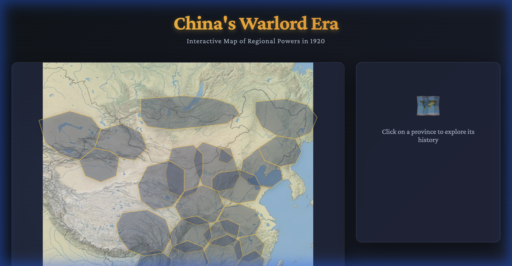

You don't need to learn to code. You need to learn to describe what you want.
Modern AI coding assistants can write, debug, and deploy entire web applications from natural-language descriptions. Your role as a teacher is the most important one: you provide the pedagogical vision — what students should see, explore, analyze, and create. The AI handles the syntax, the libraries, and the build pipeline.
This guide walks you through the complete process of turning an idea into a live, interactive web tool that your students can access from any device.
The workflow in this guide isn't limited to one type of project. Here's a taste of what teachers across every subject area can build — all from natural-language descriptions, all hosted for free:
A 3D interactive globe with 85+ geo-coded forecasts, live verified news from Serper API, 7 theoretical lenses (Realist, Feminist, Marxist…), and a crisis escalation simulator with animated threat arcs. (Our case study — see below)
A dark-themed virtual lab with a 3D DNA helix, clickable cell organelle explorer, embedded quizzes, and a virtual microscope. Students zoom into mitochondria, run virtual PCR experiments, and see real-time data visualizations of population genetics.
An elegant horizontal timeline spanning Renaissance to Postmodernism, with author portraits, key excerpts, and thematic link maps. Click Shakespeare, and a detail card appears with biography, famous quotes, and connections to modern adaptations.
Interactive maps showing territory changes across centuries with primary source quotes per province. Click a region and see who controlled it, their army size, and a contemporary account. Already built — see below.
An animated supply-demand dashboard where students adjust policy sliders (tax rate, interest rate, trade tariffs) and watch GDP, inflation, and unemployment gauges respond in real-time. Includes a mock stock ticker and simulated news feed of economic events.
An interactive piano keyboard that highlights chords when played, with a staff view showing notation in real-time. Includes a chord progression builder with drag-and-drop blocks and a waveform visualizer that dances to the audio output.
An animated graphing calculator where students drag sliders to transform parabolas, sine waves, and exponential functions. Split-screen shows the math equation updating alongside a real-world application — projectile motion, population growth, or compound interest.
A 3D globe with environmental heat map overlays — temperature anomalies, sea level rise, deforestation. A time slider scrubs from 1900 to 2100 showing projected changes. Side panels show CO₂ levels, ice sheet area, and species displacement data.
This interactive history project was built in a single conversation using the same workflow described in this guide. Students click on provinces of 1920s China to explore which warlord clique controlled each region, their army strength, and primary source quotes from the era.
Built in one session: React + interactive SVG overlays + NotebookLM historical sources
Antigravity is the AI-powered coding environment where all the magic happens. Think of it as a "mission control" for building software — you type what you want in natural language; the AI writes and runs the code.
MCP (Model Context Protocol) servers let the AI assistant access external tools and APIs. They're configured in a
mcp_config.json file:
| Server | Purpose | API Key Required? |
|---|---|---|
| GitHub | Version control — push code, create repos, manage files | Yes — Personal Access Token |
| Serper | Google search API — fetches real-time news headlines and links | Yes — serper.dev (2,500 free searches) |
| Firecrawl | Web scraping — verifies links and extracts content | Yes — firecrawl.dev (500 free pages) |
| NotebookLM | Google's research tool — query your uploaded sources for citation-backed answers | Google account authentication |
If your project includes live news or current events, here's the pipeline:
AI runs Google searches for current news on your topic (e.g., "Sudan ceasefire 2026").
Candidate links are scraped to verify they're accessible and non-paywalled. Broken links are discarded.
Verified links become a live_intel.json file with structured fields (title, source,
URL, coordinates).
The app fetches the JSON and renders it — as sidebar cards, map pins, or news tickers.
public/ folder.
Every project starts the same way: create a folder, install tools, start a local server.
# 1. Create the project folder
mkdir my-awesome-project && cd my-awesome-project
# 2. Scaffold a React + Vite app
npx -y create-vite@latest ./ -- --template react
# 3. Install dependencies & start dev server
npm install && npm run devOpen http://localhost:5173 — you'll see a blank React page ready to customize.
npm install globe.gl papaparse — globe.gl for the 3D Earth and
papaparse
for reading CSV data. Every project will have its own special libraries.
This is the creative core. You describe what you want; the AI writes the code. The quality of your prompts determines the quality of the result.
Effective prompts have three layers: Structure (layout, components), Content (what data to show, where it comes from), and Aesthetics (visual style, animations, fonts).
Initial prompt — Long and detailed. Sets the vision for the entire project.
Iteration prompts — Short and targeted. Change one thing at a time:
Every educational project needs data. Two options:
| Approach | Best For | How |
|---|---|---|
| Static files (CSV / JSON) | Historical data, teacher-curated content, quiz questions | Place files in public/ folder — Vite copies them to build output automatically |
| Live APIs (Serper + Firecrawl) | Current events, live scores, real-time news | Search → scrape → verify → save as JSON (see Phase 1 pipeline) |
GitHub stores your code online. Netlify hosts it as a live website. Together, they give you a one-command deployment pipeline: push code → site auto-updates.
# 1. Create a repo at github.com/new (set to Public)
# 2. Initialize and push
git init
git add .
git commit -m "Initial commit"
git remote add origin https://github.com/YOUR-USERNAME/project-name.git
git branch -M main
git push -u origin main
# 3. On Netlify: Add new site → Import from GitHub
# Build command: npm run build
# Publish directory: distgit add . # Stage changes
git commit -m "Describe what you changed" # Save snapshot
git push origin main # Push → auto-deploys| Resource | Starter (Free) | Education / Open Source |
|---|---|---|
| Bandwidth | 100 GB / month | Effectively unlimited for edu projects |
| Build minutes | 300 min / month | Extended — frequent deploys OK |
| Serverless Functions | 125K invocations | Extended |
| Cost | Free (with limits) | Free (with relaxed limits) |
Why this matters: A class of 30 students visiting a ~2 MB page daily can approach the 100 GB Starter limit within a month. The education plan prevents surprise shutdowns or overage charges mid-semester.
LICENSE file with the MIT License text
CODE_OF_CONDUCT.md (use the Contributor
Covenant template)No project is finished after the first build. Real development is a loop:
┌──────────────────────────────────────────────┐
│ │
│ Describe → Build → Verify → Refine → ↩ │
│ │
└──────────────────────────────────────────────┘| Step | You Do | AI Does |
|---|---|---|
| Describe | Tell the AI what you want to change | — |
| Build | — | Writes/modifies code |
| Verify | Check the result in your browser | Can also verify via browser automation |
| Refine | Provide feedback ("slower", "bigger", "different color") | Adjusts code |
| Deploy | Say "push this live" | Runs git add, commit, push |
Common iteration types: feature additions, bug fixes, UX improvements, content updates, visual polish, and feature removal (sometimes a feature doesn't serve students as well as expected).
Here's the complete timeline — from blank folder to live deployment — using the exact process above. Every step was done inside Antigravity.
An interactive cyberpunk-themed dashboard for IB Global Politics: 85+ geopolitical forecasts on a 3D globe, category filtering, 7 theoretical lenses, and crisis escalation simulation.
Real projects don't emerge fully formed. Here's what the Command Center actually looked like at each stage:
First working version: 3D globe with basic dots, metrics bar at bottom, but no Intel Feed sidebar yet. The globe rotates and shows geo-coded events, but the UI is minimal.
After one iteration prompt, the Intel Feed sidebar appears with category filtering. Events now show as scrollable cards with "Economy & Trade" filter active. The layout is functional but still evolving.
Final build: Color-coded threat dots on the globe, live intel feed with "VIEW LIVE REPORT" links, Global Stress Test meter, "Launch Glopo Companion" button, Credits & License link, and the Analyst Pin tool. 90 events tracked with 41% conflict ratio.
Beyond the main dashboard, individual features were added through simple iteration prompts:
Theoretical Lenses: Click any event → choose from 7 IR perspectives → get event-specific analysis
Student Pins: Lat/long input form for student observations (later removed to keep focus on verified data)
Compliance Footer: Non-commercial disclaimer, Netlify badge, Code of Conduct link, and "Back to Command Center" return button — all required for the free education hosting plan.
Scaffolded React + Vite. Installed globe.gl and papaparse. Gave a detailed
prompt describing the full dashboard: 3D globe, Intel Feed, metrics bar, cyberpunk aesthetic. AI
generated App.jsx (~530 lines) and App.css (~980 lines).
react-globe.gl had Three.js conflicts. Switched to vanilla globe.gl with
React's useRef. The AI pivoted approaches within minutes.
Created GitHub repo, pushed code, connected Netlify. Site live at
globalcommandcenter2026.netlify.app.
Dashboard loaded but showed 0 events. CSV was in root, not public/. Moved it → rebuilt →
redeployed. Lesson: Vite only serves files from public/.
Used Serper API → browser verification → live_intel.json with 5 verified stories from Sudan,
arms control, climate policy, and human rights.
Added MIT License, Code of Conduct, Netlify badge, and "NON-COMMERCIAL ACADEMIC TOOL" disclaimer.
Compliance elements were covering the globe. Moved to a scrollable section below. Added "CREDITS & LICENSE" header link and "BACK TO COMMAND CENTER" button.
Added 7 IR perspectives (Realist, Liberal, Marxist, Structuralist, Constructivist, Feminist, Postcolonial) to the detail modal. Each generates event-specific analysis.
Added "Scenario Simulator" slider: atmosphere shifts blue→orange→red, conflict arcs connect nodes at high tension. Labels: BASELINE / LOW TENSION / ELEVATED / CRITICAL.
Removed analyst pin feature to keep the globe focused on verified data. Committed all changes → GitHub → Netlify auto-deployed. Live site updated within 2 minutes.
global-command-center/
├── index.html # Entry point
├── package.json # Dependencies
├── .gitignore # Excludes node_modules, dist, .DS_Store
├── LICENSE # MIT (OSI-approved)
├── CODE_OF_CONDUCT.md # Contributor Covenant
├── public/
│ ├── Global_Forecasts_2026_Enriched.csv # 85 forecast events
│ ├── live_intel.json # Verified news links
│ └── news_brief.json # Headlines
└── src/
├── App.jsx # Main component
├── App.css # Cyberpunk styling
└── theories.js # 7 IR theoretical lenses| Problem | Cause | Solution |
|---|---|---|
| Dashboard loads but shows 0 events | Data file not in public/ |
Move CSV/JSON to public/ and redeploy |
npm install fails |
Dependency version conflicts | Delete node_modules and package-lock.json, run npm install
again |
| Netlify build fails | Wrong build settings | Build command: npm run build · Publish: dist |
| External links return 404 | News articles moved/deleted | Re-verify in incognito; use official organization pages |
| Approaching bandwidth limit | High traffic on Starter plan | Apply for Netlify's Education plan |
| AI gives wrong code | Ambiguous prompt | Be more specific; reference exact file names |
| Visualization library conflicts | React wrapper incompatible | Use vanilla JS library with React useRef instead |
No. The AI writes the code. You need to describe what you want clearly. Over time, you'll naturally start to understand patterns — but it's not required.
The core stack is free: GitHub, Netlify (education plan), Node.js, React, Vite. The AI assistant (e.g., Claude Code, Cursor) requires a subscription. API keys for live news have free tiers sufficient for educational use.
Yes! Add them as GitHub collaborators. They can fork, modify, and submit pull requests — a real-world skill.
Edit your data files (CSV/JSON), commit, and push. For bigger changes, open a new Antigravity conversation.
| Tool | What It Does |
|---|---|
| Node.js + npm | JavaScript runtime & package manager |
| Vite | Build tool & dev server with fast refresh |
| React | UI framework — component-based |
| Git + GitHub | Version control & cloud code hosting |
| Netlify | Free web hosting with auto-deploy from GitHub |
| Server | npm Package | API Key Source | Free Tier |
|---|---|---|---|
| GitHub | @modelcontextprotocol/server-github |
GitHub Settings → Tokens | Unlimited |
| Serper | serper-search-scrape-mcp-server |
serper.dev | 2,500 searches |
| Firecrawl | @modelcontextprotocol/server-firecrawl |
firecrawl.dev | 500 pages |
| NotebookLM | notebooklm-mcp (via uvx) |
Google account login | Free |
| Project Type | Library | Install Command |
|---|---|---|
| 3D Globe / Map | globe.gl, Leaflet, Mapbox GL | npm install globe.gl |
| Data Charts | Chart.js, D3.js, Recharts | npm install chart.js |
| CSV Parsing | PapaParse | npm install papaparse |
| Markdown Rendering | react-markdown | npm install react-markdown |
| Animations | Framer Motion, GSAP | npm install framer-motion |
| Audio / Music | Tone.js | npm install tone |